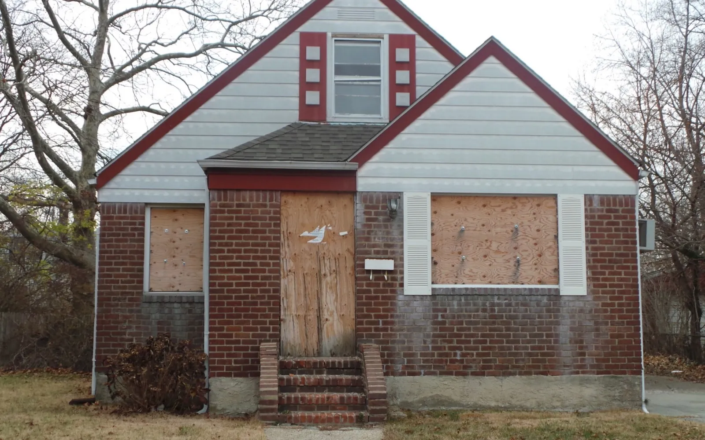
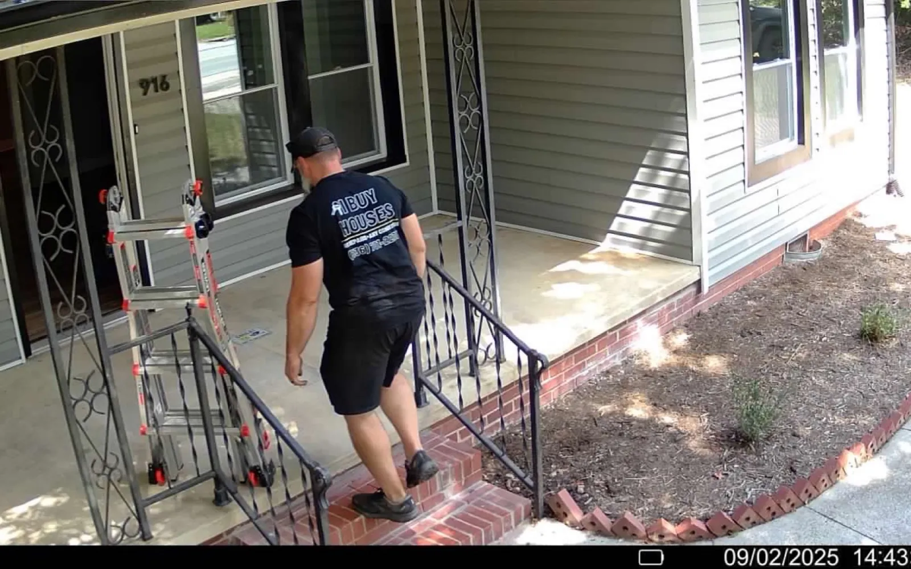

Winston-Salem NC
Sell your Winston-Salem house fast without fixing it first.
If you need to sell a house fast in Winston-Salem, an as-is offer can remove repairs, cleanup, showings, and buyer-financing delays from the plan. America Home Buyers LLC helps you compare that convenience with what a traditional listing may net.
When a fast sale may make sense.
Winston-Salem sellers often reach out when the property would need work before showings, when a family property needs to be settled, or when they want to avoid months of cleanup and repairs. A direct offer can reduce moving parts, but it should still be compared against what the open market may bring.
- Older homes with deferred maintenance.
- Inherited properties or estate situations.
- Vacant houses that need cleanout.
- Owners who want privacy before going public.

Do I need to repair or clean out the house first?
No. Share the condition honestly and we can review the property as it sits. See the belongings and cleanout guide for the questions to ask.
Can I sell an inherited house in Winston-Salem?
Often, yes, after ownership and signing authority are clear and title or estate issues are addressed. Start with our North Carolina inherited-house guide, then ask a North Carolina closing attorney about the specific estate.
How quickly can closing happen?
The timing depends on title work, property access, payoff information, and your needs. We will discuss a realistic closing window after reviewing the property.
Is selling fast always the best choice?
No. A fast as-is sale can help when repairs, timing, privacy, or certainty matter, but a traditional listing may be better for a market-ready home.
Winston-Salem and Forsyth County
“Fast” should still mean clear.
A rushed decision is not the goal. The useful version of a fast sale is fewer repairs, fewer showings, a known buyer, a written agreement you understand, and a closing timeline that fits the title work and your situation.
Ask what inspections remain, whether the agreement can be assigned, who pays which costs, and what happens if the buyer does not close.

Request a Winston-Salem offer.
Send the phone number and property address. Name and email are optional.
Compare the whole outcome.
Do not compare only a cash offer with an optimistic retail price. Compare repairs, cleanout, concessions, commissions or fees, carrying costs, timing, and the chance of a financed buyer failing to close.
Separate occupied-home repairs from vacant-house risk
For a Winston-Salem house, explain which systems are working today and which need investigation. Water intrusion, foundation movement and a nonworking heating system call for different reviews from worn paint or flooring. If the house is vacant, tell us how long it has been empty and whether utilities remain on.
You do not need to turn on unsafe equipment for a walkthrough. Share known inspection reports and arrange safe access; then compare an as-is offer against the preparation and carrying costs of listing.
Explore inherited property, houses needing repairs, tenant-occupied homes or liens and back taxes. Request a property review.
West End, Old Salem and Bethabara
Winston-Salem identifies West End, Old Salem and Bethabara as local historic or historic-overlay districts. A seller in one of these areas should check the property’s designation before budgeting exterior alterations. Review requirements can affect the renovation plan; they do not prevent an owner from asking about an as-is sale. Compare houses with similar age, character and condition rather than relying on a city-wide average.
Official local resource: Winston-Salem historic-district information. Reviewed November 10, 2026.